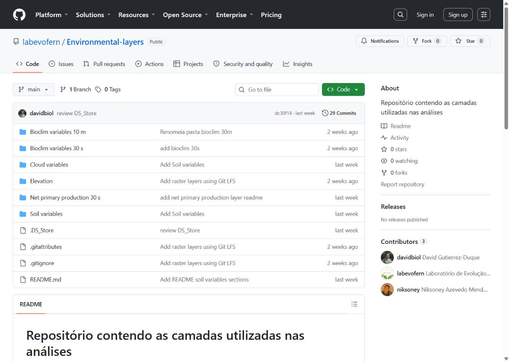
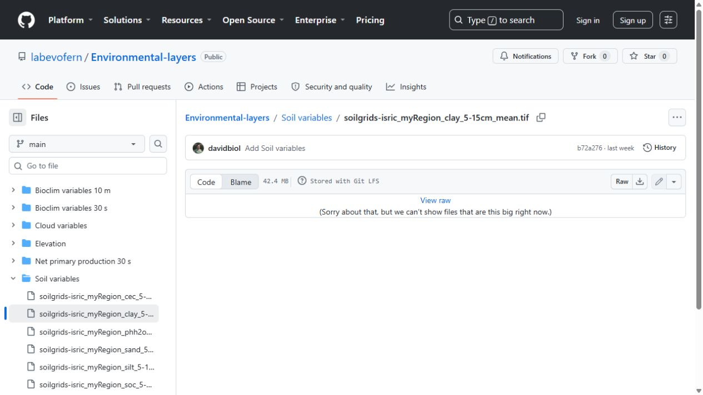
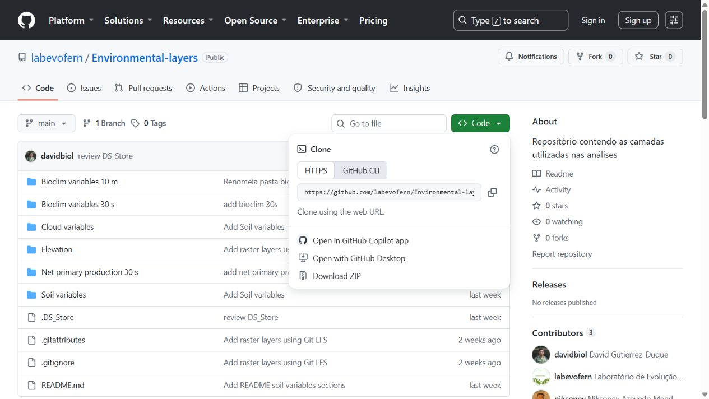

Fern and Lycophyte Evolution Lab
Federal University of Pernambuco | Evolutionary Biology | Ferns and Lycophytes
Federal University of Pernambuco | Evolutionary Biology | Ferns and Lycophytes
Open environmental data
Browse the environmental layer collection on GitHub and use this visual guide to download one original .tif file or the complete repository.
Start here: open the public repository. No GitHub account or special program is required to browse the folders and download an individual layer.
Open the layers on GitHubRecommended: download one layer at a time to receive the original file in full resolution.
.tif file.

.tif.Use this route when you want all folders in a single ZIP archive.

.tif in full resolution. A ZIP containing the entire repository may include small pointer files instead of the complete rasters.